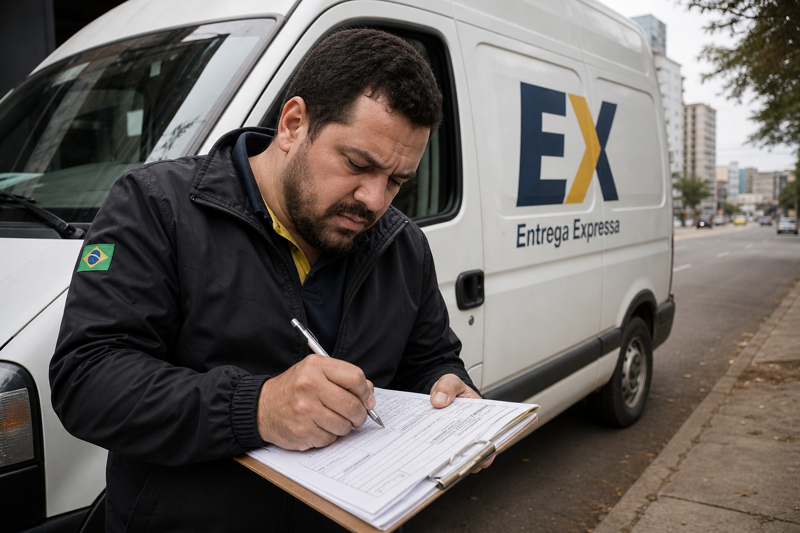
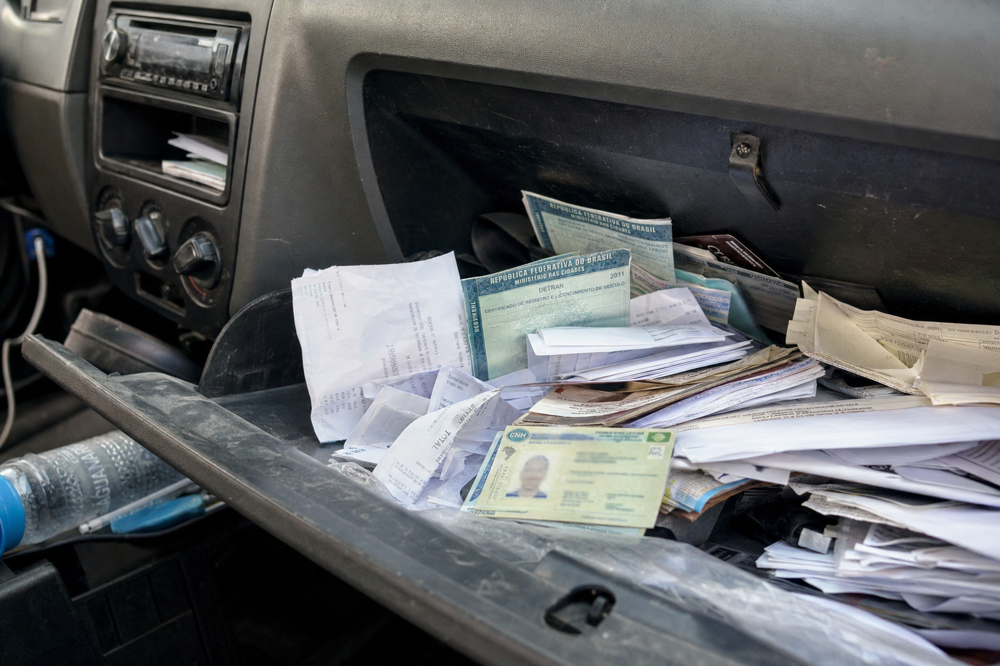
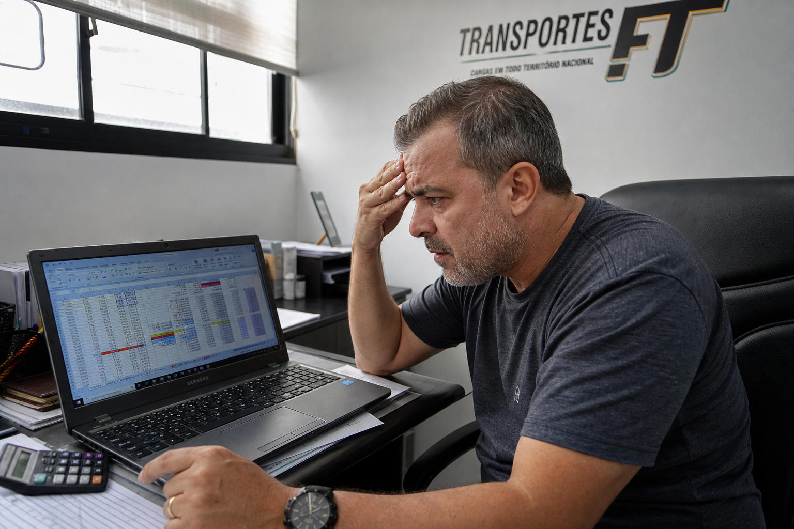
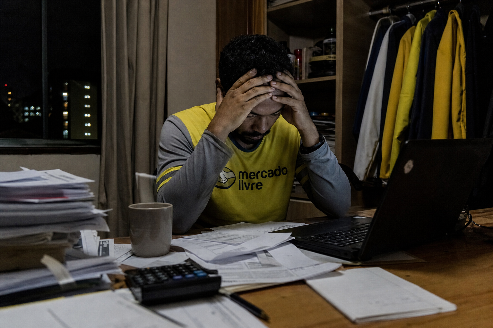
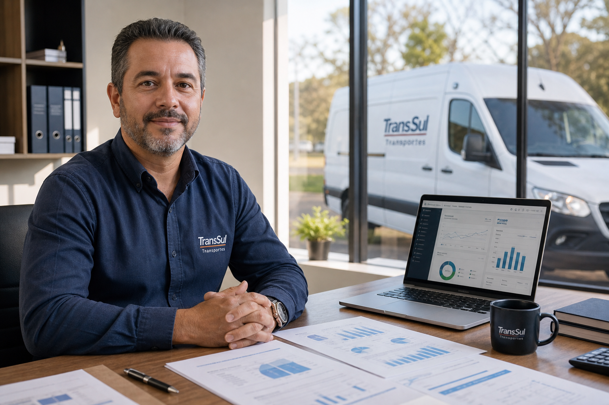
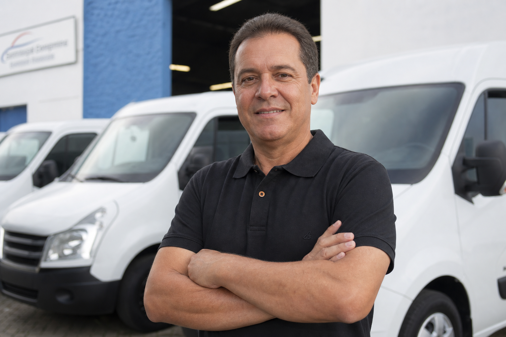

01
Emitir notas fiscais
Parar a rota, abrir o computador, preencher dados, corrigir erros e perder horas que poderiam ser entregas.
Gestão administrativa para transportadores
Notas fiscais, financeiro, administração e operação. Tudo organizado por especialistas para você focar apenas em transportar e faturar.
O dia a dia do transportador

Parar a rota, abrir o computador, preencher dados, corrigir erros e perder horas que poderiam ser entregas.
Combustível, pedágio, manutenção, seguro — tudo misturado na conta pessoal, sem saber o custo real de cada viagem.
Entregas feitas, prazo vencido e ninguém para cobrar com método. O dinheiro demora a entrar.

Contratos, CNH, CRLV, comprovantes espalhados. Na hora da fiscalização ou da renovação, o caos aparece.
Depósitos, PIX e boletos sem conciliação. Você não sabe se recebeu tudo o que tinha direito.

Planilhas que ninguém atualiza, fórmulas quebradas e zero visão clara de quanto o negócio realmente lucra.
A solução CIOT Express
Fluxo de caixa, recebimentos e pagamentos sob controle.
Emissão correta e no prazo, sem interromper sua operação.
Apoio nas rotinas do dia a dia para manter tudo funcionando.
Documentos, contratos e obrigações sempre em ordem.

Sem gestão

Com a CIOT Express
Por que a CIOT Express
Pessoas de verdade no WhatsApp e no telefone. Sem robôs, sem fila, sem menu infinito.
Equipe dedicada ao dia a dia de motoristas autônomos, agregados e pequenas frotas.
Sem salários, encargos ou escritório. Você paga pela gestão, não por estrutura.
Metodologia padronizada para notas, financeiro e documentos — sempre no mesmo ritmo.
Quem já confia
"Antes eu perdia meio dia por semana com nota e planilha. Hoje foco nas entregas. Meu faturamento subiu porque voltei a rodar."

"Tenho três vans e nunca soube quanto cada uma lucrava. A CIOT Express organizou tudo. Hoje tenho relatório e sei onde investir."
"Parece ter uma secretária exclusiva. Qualquer dúvida sobre pagamento ou documento, resolvido na hora pelo WhatsApp."
A CIOT Express assume sua gestão para que você possa focar em crescer.
Quero Organizar Minha Empresa